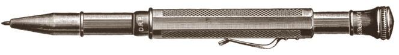
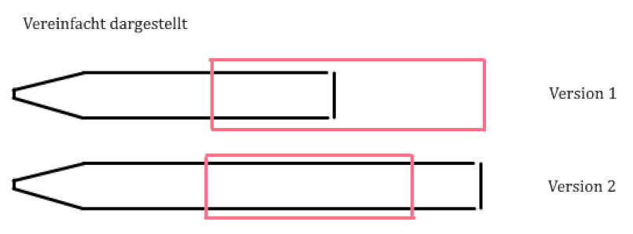

Four in Hand Vierfarbstift
Four in Hand four colour pencil
Der Four-in-Hand ist einer der bekanntesten alten Vierfarbstifte.
Sein Verbreitungsgebiet war primär Großbritannien, Deutschland, und Frankreich.
Er hat ein sehr schönes, antikes Aussehen, und wurde in verschiedensten Variationen (Lackierung, Guilloche, Beschichtung) hergestellt.
Weil er in solch großen Mengen hergestellt wurde, ist er auch heute noch sehr günstig und einfach mit Originalschachtel auffindbar.
Doch über seine Hintergründe hat noch niemand geschrieben. Das möchte ich ändern.
Vom Four-in-Hand gibt es 2 Versionen.

Die erste Version erschien Mitte bis Ende der 1920er Jahre,
die zweite Anfang bis Mitte der 1930er Jahre.
Die 2. Version kostete bei Johann Faber im Jahr 1939 pro Stück 0.75 Reichsmark, also 2026 um die 5 Euro laut Währungsrechner.
Aufbau
Die die Schreiböffnung besitzende Hülse ist umgeben von einer äußeren, einem langen Schiebering entsprechenden zweiten Hülse. Letztere besitzt einen Mitnehmer, mit dem sie beim Vorschieben je nach Drehung der Hülsen zueinander einen anderen der durch die Längsschlitze aus der inneren Schiebehülse hervorstehenden Minenhalter zur Schreiböffnung transportiert und durch Reibung in Schreibposition hält.Bedienung
Beide Stifte funktionieren grundsätzlich gleich:Die beiden Stifthälften werden auseinandergezogen, so weit es geht. Das kann bei alten Stiften einiges an Kraft erfordern, wenn sie lange nicht benutzt wurden.
Es sollte ein Farbindikator auf der vorderen Hülse zu sehen sein. Achtung: Es existiert eine 2-Farben-Version desselben Mechanismus, welche keine Indikatoren besitzt.
Die Stifthülsen werden verdreht, bis eine Delle oder Erhebung auf der äußeren Hälfte mit einem der Farbpunkte auf der inneren Hülse fluchtet.
Nun werden die Hülsen zusammengeschoben. Dadurch wird die Mine vorgeschoben.
Der Vorschub ist stufenlos. Ist die Mine abgeschrieben, werden die Hälften ein beliebig großes weiteres Stück zusammengeschoben.
Schiebestifte ohne Feststellmechanismus waren damals die Norm, doch diente in den meisten Fällen das Schieben nur dazu, den eigentlichen Vorschubmechanismus, welcher durch einen gewöhnlichen Drehmechanismus an jedem Minenhalter jeweils ausgebildet war, in Schreibposition zu bringen.
Eine Auflistung, Gliederung, Klassifizierung und eine Gegenüberstellung der Mechanismen werden Sie in meiner zukünftigen Publikation zu Mehrfarbstiften finden. Schreiben Sie mir eine E-Mail, um benachrichtigt zu werden.
Namensherkunft
"Four-in-Hand" ist ein auch heute noch weit verbreitet genutzter britischer Krawattenknoten. Dieser hatte einer Theorie zufolge seine Herkunft im Four-in-Hand-Coaching-Club Londons, welcher wiederum diesen Namen trug, weil man beim Four-in-Hand-Fahren mit vier Pferden mit vier Zügeln in derselben Hand fuhr.An dieser Phrase angelehnt benannte man wohl auch den Stift - da man bei diesem vier Farben in der Hand hält.
Der Stift ist zusätzlich unter "Foursome" (England, 2. Version), "Quatricolor" (Frankreich, 2. Version), "Penkala Quartett" (Deutschland, 1.Version) bekannt.
Die 2. Version wurde ohne eigenen Produktnamen auch von A.W. Faber-Castell und Johann Faber verkauft.
Geografische Herkunft
Die Erfinder sind ein Tscheche und ein Österreicher aus 1924. Diese haben die Rechte aber an eine englische Firma abgetreten. Es ist anzunehmen, dass die Stifte durch bestimmte Ansprüche der Patente des Erfinder-Duos geschützt waren, auch wenn sie nie, wie das bei den meisten Stiften der Fall ist, im Patent fast identisch abgebildet oder/und beschrieben waren.1926 folgt ein englisches Patent, in welchem ein Stift wie die 1. Version beschrieben und abgebildet ist.
1927 erscheint ein deutsches Patent, welches ebenfalls dieselbe Version beschreibt und abbildet.
In den 1930ern, also dann, als die 2. Version erscheint, veröffentlicht dieselbe deutsche Firma ein Patent, welches diese Version beschreibt und abbildet - allerdings mit einer Verbesserung.
Die Patentnummern in den Anleitungen zeigen für beide Versionen zum Patent des Erfinder-Duos. Sowohl einmal im englischen und einmal im deutschen Produktzettel.
Es scheinen aber, trotz den Rechten der englischen Firma am Four-in-Hand, nicht alle Four-in-Hand auch in England hergestellt worden zu sein.
Auf einigen der 1. Version steht "GERMANY".
Auf einigen der 2. Version findet sich "FOREIGN". Auf einer Verpackung steht "Boxed in England", was ebenfalls einen Import suggeriert.
Meine Hypothese ist, dass die 1. Version vorwiegend in Deutschland unter Lizenz hergestellt wurde. Durch die politischen Spannungen der 1930er Jahre wurde die Produktion der Version 2 aber zunehemens nach England verlagert.
Ein fast vollständig identischer Stift wurde nach dem zweiten Weltkrieg in Deutschland hergestellt.